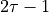
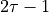
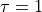

Computing the correlation time
Whenever samples are correlated (as is the case when each subsequent step of a molecular dynamics simulation is used for the trajectory data), we cannot compute error bars without explicitly taking these correlations into account (if we don’t we will underestimate the error bars). Therefore, we need to estimate the (auto)correlation time for each trajectory used in the histogram construction. Her, we illustrate how to do this using ThermoLIB. There are several methods possible to do this, the one we illustrate here is by means of constructing the auto correlation function (acf) and fit a simple exponential decay to it as implemented in the decorrelate routine.
Fit to autocorrelation function for single trajectory
To estimate the (integrated) autocorrelation time of the CV in a given trajectory, we first compute the autocorrelation function (acf) and fit a simple exponentional function to it of the form

in which  is the exponential correlation time from which we can compute the integrated correlation time as . This can be done using the
is the exponential correlation time from which we can compute the integrated correlation time as . This can be done using the corrtime_from_acf routine. To illustrate, you can use the code below which will do (and plot) the fit for first trajectory present in the list argument traj:
corrtime = corrtime_from_acf(traj[0])
This plot could look as follows:

The meaning for the various elements in this plot are:
The shaded black area is resulting from very high frequency atomic oscillations (which may be absent in your plot if the trajectory comes from an MD simulation with a much larger time step, or when you only dumped the trajectory every so many time steps)
The solid red line represents the enveloppe of the black area and hence has the purpose to eliminate the rapid oscillations. This is done by default in ThermoLIB due to the default value of the keyword argument
n_nested_envolopes=1.The dashed red line is the result of the exponential fit to the solid red line.
If the fit (dashed red line) nicely follows the trend of the black curve (or the boundary of the black region), especially in the beginning, we know we can trust the resulting integrated correlation time and parse it to the from_wham routine (see next subsection).
Note
As a clarification of the need for the envelope construction, we illustrate what would have happend if we would have omitted it (by setting n_nested_envolopes=0):
corrtime = corrtime_from_acf(traj[0], n_nested_envolopes=0)
In the present example, this results in the following plot:

Now we clearly see that the fit was not done properly. This is because the exponential curve tries to follow a function that oscillates very quickly from positive numbers to equally large but opposite negative numbers. As the exponential cannot follow this, it just averages to zero. This is exactly why we have set the default value of n_nested_envelopes to 1 (as this will usually be the case if MD trajectories are used with small time steps without sub sampling in the output generation).
Warning
If your simulation data does not exhibit the fast oscillations indicated by the black solid region shown above, it is actually advised to switch of the envolope construction by defining n_nested_envolopes=0 as done in the note above.
Hint
What if the fit was not done adequately?
To illustrate how to identify a bad fit and how to fix it using the p0 keyword argument, we consider what happens if we would have set n_nested_envelopes=2, which means we compute the envelope of the envelope and fit the exponential decay to that.
corrtime = corrtime_from_acf(traj[0], n_nested_envolopes=2)

We can now see that the fit to the envelope of the envelope was not well performed, i.e. the red dashed line does not follow the red solid line. Furthermore, we also see that the resulting exponential correlation time is 1 (corresponding to an integrated correlation time of 1 as indicated in the plot legend). This value of  actually corresponds to the initial value of the fitter, indicating the the fit routine actually immediately gave up and just returned the initial guess. To improve on this, we can provide a better initial guess through the use of the p0 argument.
corrtime = corrtime_from_acf(traj[0], n_nested_envolopes=2, p0=1000)

The fit now indeed nicely follows the red solid line again. The choice of p0=1000 was made just based on the previous plots of the acf which clearly indicated a decay in the order of magnitude of 1000 timesteps.
Compute correlation time for trajectory series
Once we know a decent setup for fitting the autocorrelation function (i.e. the choice of the optional parameters discussed above), we can proceed to repeat the procedure for each trajectory in a list of trajectories (as given by traj below):
#code to compute correlation times for each trajectory in the list traj
corrtimes = decorrelate(traj, plot=True)
Setting plot=True will automatically generate a figure plotting the correlation time as function of the trajectory index for each trajectory present in the list argument traj.
Attention
In case the user wants to adapt some of the acf fit parameters as discussed in the previous subsection, he can do so. The p0 parameter can be parsed to the decorrelate routine as well, the n_nested_envelopes parameter is renamed to acf_n_nested_envelopes. So one would need to use the following code:
corrtimes = decorrelate(traj, acf_n_nested_envelopes=2, p0=1000, plot=True)